[13-2] 修改主频&睡眠模式&停止模式&待机模式 — 学习笔记
- 课程：江协科技《STM32入门教程-2023版 细致讲解 中文字幕》
- 视频：BV1th411z7sn?p=45，50:23（3023 秒）
- 素材：252 帧关键帧（每 12 秒，宽 1280px）+ PP-OCRv4 画面硬字幕 OCR（699 段）；关键截图 19 张随笔记收录（源图在
vidsum_out/stm32_p45/frames/，站内图片在assets/images/stm32-45/） - 字幕情况：该集 B 站没有 CC/AI 字幕，文本由画面烧录的中文字幕 OCR 得到（source=subtitle-ocr）；错字主要是
停止→ 「停北」（7 处）、运行→ 「云行」（3 处）、模式→ 「模贰」（3 处）、编译→ 「扁译」（2 处）、数据→ 「数居」（2 处）、晶振→ 「显振」，并混入网页/PDF 文字与工具栏文字——这些不是口述内容，已剔除/校正（清单见文末「存疑」）。 - 本集定位：这是模块 13 的代码课——4 个程序全部「从复制现成工程开始 → 逐行写码 → 下载验证（含低功耗特殊下载法）」，无下集预告。
- 4 个程序与复制来源（勿混）：
| 程序 | 复制来源 |
|---|---|
13-1 修改主频 |
OLED 显示屏工程 |
13-2 睡眠模式+串口发送+接收 |
9-2 串口收发工程 |
13-3 停止模式+对射式红外传感器计次 |
5-1 工程 |
13-4 待机模式+实时时钟 |
12-2 实时时钟工程 |
一句话结论
① 修改主频：入口在 system_stm32f10x.c 文件头注释——它提供 SystemInit()（配置系统时钟源、PLL 倍频因子、AHB/APBx 预分频、Flash 设置；在 startup 文件里复位后被调用、进入 main 之前）、SystemCoreClock 变量（存 HCLK，可用来配 SysTick）、SystemCoreClockUpdate()（运行时改了主频必须调用它更新变量）。真正改主频的地方在第 106～116 行的预编译宏区：#if defined(STM32F10X_LD_VL)… 一组、#else 一组；F103C8T6 是 MD 中容量，看 #else 这一组，里面有 SYSCLK_FREQ_HSE / SYSCLK_FREQ_24MHz / SYSCLK_FREQ_36MHz / SYSCLK_FREQ_48MHz / SYSCLK_FREQ_56MHz / SYSCLK_FREQ_72MHz 六档宏（默认只放开 72MHz）——用法就是把当前宏注释掉、把目标频率的宏解除注释。⚠ 该文件默认是只读的（工程树里文件图标带锁），要右键文件（或整个文件夹）→ 属性 → 取消「只读」才能编辑。SetSysClockToXX 里的实际算式：72M ＝ HSE×9、56M ＝ HSE×7、48M ＝ HSE×6、36M ＝ HSE/2×9、24M ＝ HSE/2×6、HSE 档＝不分频直通；AHB /1、APB2 /1、APB1 /2（所以 72M 时 HCLK＝PCLK2＝72M、PCLK1＝36M）。若 HSE 起振失败会走 else 分支（注释提示「the application will have wrong clock configuration，可自行加错误处理」），此时系统仍用最初启动的 HSI 8MHz——所以「发现主频变成 8M」就说明 HSE 真有问题。连锁影响（必写）：Delay_us 里按 72M 写死了常量，改主频后所有计时都不准，通用做法是按 SystemCoreClock 动态计算；作者的结论是「牵一发动全身，不推荐随便修改主频」。现象：72M 时 OLED 显示 SYSCLK:72000000、Running 1s 周期；改成 36M 后显示 SYSCLK:36000000、Running 周期变 2s。② 睡眠模式：主循环末尾加 __WFI(); 即可（也可用 __WFE()，区别只是唤醒方式；本工程只演示 WFI，推荐 WFI 的中断唤醒）；SLEEPDEEP=0 是默认值，进的就是睡眠模式，不必配寄存器；若要配 SLEEPDEEP/SLEEPONEXIT/SEVONPEND 得直接操作内核的 SCB->SCR（见 Cortex-M3 编程手册 4.4 系统控制块；属内核、不是 PWR 库）。适用性分析：串口「随时待命收数据」用睡眠 ✓（USART 硬件仍能收数据、收到后产生中断唤醒 CPU）；停止 ✗（1.8V 时钟全关，USART 中断不能唤醒停止模式）；待机 ✗。③ 停止模式：必须先开 PWR 时钟 RCC_APB1PeriphClockCmd(RCC_APB1Periph_PWR, ENABLE)——不开则写寄存器无效、读回来全是 0；然后调 PWR_EnterSTOPMode(PWR_Regulator_ON, PWR_STOPEntry_WFI)（参数一：PWR_Regulator_ON 调节器开／PWR_Regulator_LowPower 低功耗；参数二：PWR_STOPEntry_WFI／_WFE）。函数内部：读 PWR->CR → tmpreg &= CR_DS_MASK（清 PDDS 和 LPDS，清 PDDS＝选择停止模式）→ 按参数 设 LPDS（ON 时 LPDS=0）→ 写回 PWR->CR → SCB->SCR |= SCB_SCR_SLEEPDEEP → 按参数执行 __WFI() 或 __WFE()。坑：唤醒后主频变 8M——PPT 停止模式条目写「当一个中断或唤醒事件导致退出停止模式时，HSI 被选为系统时钟」；首次复位时 SystemInit 配的是 HSE×9＝72M，但退出停止模式后 PLL/HSE 未恢复、默认用 HSI 8MHz（现象：Running 明显变慢）。解决：唤醒后立刻再调一次 SystemInit()，主频恢复 72M。④ 待机模式：先把显示改成 CNT:/ALR:/ALRF:（去掉年月日时分秒和 DIV），用 RTC 闹钟唤醒：uint32_t Alarm = RTC_GetCounter() + 10; RTC_SetAlarm(Alarm);（约 10s 后唤醒）。坑：RTC_ALR 寄存器是「只写」的（手册位说明里标 W、没有 R）→ 读不回来，所以必须用变量 Alarm 保存闹钟值再显示；主循环末尾调 PWR_EnterSTANDBYMode()：内部先清 WUF 唤醒标志 → 再 PDDS=1 选择待机 → 设 SLEEPDEEP → 执行 __WFI()；待机不区分 WFI/WFE（唤醒源固定为那 4 个信号）。进待机前先 OLED_Clear()（模拟关闭外部模块）并显示 STANDBY 便于观察；唤醒后程序从头开始执行（CNT/ALR 重新刷新、Running 再闪，说明没在暂停点继续）。PWR_WakeUpPinCmd(ENABLE) 使能位于 PA0 的 WKUP 引脚——该脚默认下拉、接高电平即唤醒、不需要做 GPIO 初始化。进待机前必须关掉外部模块（作者用 OLED_Clear 模拟，真实产品要切断外挂模块电源，否则「外挂模块耗电远超 STM32 本身，捡了芝麻丢了西瓜」）。实测电流：直接测 1mA 多（电源指示灯）→ 去掉指示灯 几百 µA → 继续排查后 降到 3µA，与手册「待机约 3µA」吻合；正常工作 20 多 mA。
0. 本集定位：代码课（4 个程序全部写完并验证）
- 4 个程序都从复制现成工程开始、逐行写码、下载验证（低功耗模式下要用特殊下载法：按住复位 → 点下载 → 松手）；
- 无下集预告，结尾是待机电流实测收束。
1. 接线与工程准备
- 本集代码都在之前代码基础上修改，接线与对应章节基本一样：
13-1 修改主频：STM32 最小系统板 + ST-Link + OLED（复制 OLED 工程）；13-2 睡眠模式+串口：在9-2串口工程基础上，接线 = 串口 + OLED；13-3 停止模式+红外计次：在5-1工程基础上（对射式红外传感器 + OLED）；13-4 待机模式+实时时钟：在12-2实时时钟工程基础上，多了 PA0/WKUP 引脚接线（红圈标出，用绿色飞线接入）；
- 面包板接线作者已事先接好（前面章节都演示过），本集不再重复。
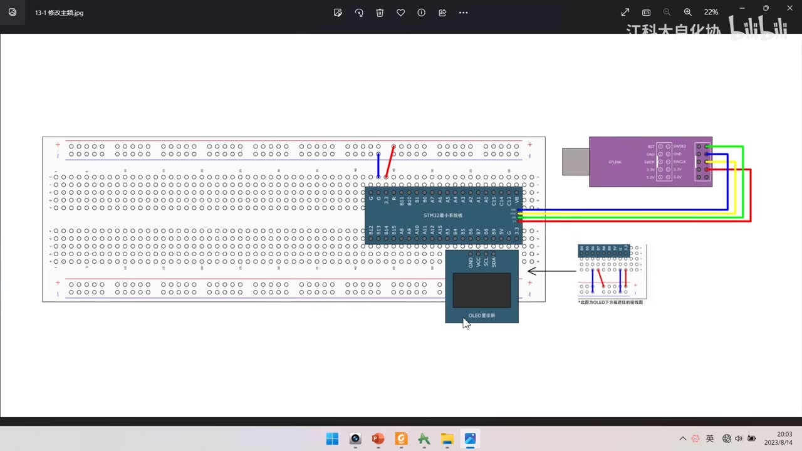
图 1：接线图 13-1 修改主频——STM32 最小系统板 + ST-Link + OLED 显示屏（4 根 I2C 线 + 电源）；右下角注明 *此图为OLED下方被遮挡的接线图
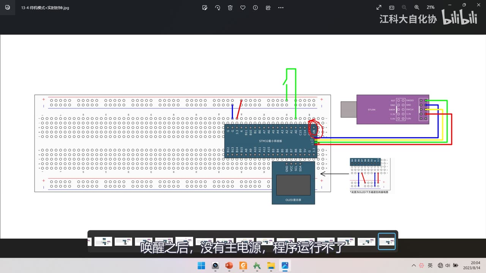
图 2：接线图 13-4 待机模式+实时时钟——红圈标出板子上的 PA0/WKUP 引脚，并用绿色飞线接入（用于待机唤醒）；字幕「唤醒之后，没有主电源，程序运行不了」
2. 程序①：修改主频（13-1 修改主频）
2.1 system_stm32f10x.c 文件头注释
- 这个文件就是用来配置系统时钟的（注释要认真读，「读懂这些注释就差不多能理解这个文件了」）；
- 文件头写明：本文件提供 2 个函数和 1 个全局变量：
SystemInit()：设置系统时钟（系统时钟源、PLL 倍频因子、AHB/APBx 预分频、Flash 设置）——在 startup 文件里、复位之后、跳转到 main 之前被调用；SystemCoreClock：全局变量，保存核心时钟（HCLK），可用于配置 SysTick 定时器或其他参数；SystemCoreClockUpdate()：更新SystemCoreClock变量——只要在程序运行中改变了核心时钟，就必须调用它；
- 文件版本
V3.5.0、日期11-March-2011（CMSIS Cortex-M3 Device Peripheral Access Layer System Source File）。
2.2 RCC 时钟树（图8）
- HSE 8MHz（外部晶振）→ PLLXTPRE（可 /2）→ PLLSRC 选源 → PLLMUL（×4～×16） → PLLCLK → SW 选择 → SYSCLK 72MHz；
- AHB 预分频 → HCLK 72MHz；APB2 预分频 /1 → PCLK2 72MHz；APB1 预分频 /2 → PCLK1 36MHz；
- 另有 LSE 32.768kHz → RTCCLK、LSI 40kHz → IWDGCLK、MCO 时钟输出、USB 预分频等；
- 此前课程一直保持默认配置（晶振 8M、AHB/APB2＝72M、APB1＝36M），但这些都不是绝对的，可以按需改——随意改可能出问题。
2.3 改主频的宏（第 106～116 行）
- 文件里用预编译指令分成两组：
#if defined(STM32F10X_LD_VL) || (defined STM32F10X_MD_VL) || (defined STM32F10X_HD_VL)（VL 型）与#else（其他型号）； - F103C8T6 是 MD 中容量，看
#else这组；组内 6 个宏（默认只放开 72MHz）：
| 宏 | 值 | 说明 |
|---|---|---|
SYSCLK_FREQ_HSE |
HSE_VALUE |
不倍频，直接用 HSE（8MHz） |
SYSCLK_FREQ_24MHz |
24000000 | HSE/2×6 |
SYSCLK_FREQ_36MHz |
36000000 | HSE/2×9（本集演示用它） |
SYSCLK_FREQ_48MHz |
48000000 | HSE×6 |
SYSCLK_FREQ_56MHz |
56000000 | HSE×7 |
SYSCLK_FREQ_72MHz |
72000000 | HSE×9（默认） |
- 用法：把当前频率的宏注释掉、把目标频率的宏解除注释（比如想改 36M，就注掉 72M 宏、放开 36M 宏）。
2.4 ⚠ 文件是只读的
- 工程树里
system_stm32f10x.c的文件图标带锁标记，说明它是只读的； - 解除只读：右键选项卡/文件 → 「打开包含的文件夹」 → 在文件夹里右键该文件 → 属性 → 取消「只读」勾选 → 确定；
- 也可以对整个文件夹操作，把只读去掉；
- 回到 Keil 后才能编辑。
2.5 SetSysClockToXX 内部（以 72M 为例）
/* PCLK2 = HCLK */
RCC->CFGR |= (uint32_t)RCC_CFGR_PPRE2_DIV1;
/* PCLK1 = HCLK */
RCC->CFGR |= (uint32_t)RCC_CFGR_PPRE1_DIV1;
/* Select HSE as system clock source */
RCC->CFGR &= (uint32_t)((uint32_t)~(RCC_CFGR_SW));
RCC->CFGR |= (uint32_t)RCC_CFGR_SW_HSE;
/* Wait till HSE is used as system clock source */
while ((RCC->CFGR & (uint32_t)RCC_CFGR_SWS) != (uint32_t)0x04) { }
...
else
{
/* If HSE fails to start-up, the application will have wrong clock
configuration. User can add here some code to deal with this error */
}
- 流程：先配 AHB /1（HPRE_DIV1）、APB2 /1（PPRE2_DIV1）、APB1 /2（PPRE1_DIV2） → PLL 源选 HSE、PLLMUL×9（
/* PLL configuration: PLLCLK = HSE * 9 = 72 MHz */）→RCC_CR_PLLON使能 PLL 并while(!(RCC->CR & RCC_CR_PLLRDY));等就绪 →RCC_CFGR_SW切到 PLL 作 SYSCLK →while((RCC->CFGR & RCC_CFGR_SWS) != 0x08);等切换完成； else分支：HSE 起振失败时走这里（可自行加错误处理），此时系统仍用最初启动的 HSI 8MHz——发现主频变 8M 就说明 HSE 真有问题；- 各档位算式：
SetSysClockTo56→ HSE×7＝56M；SetSysClockTo48→ HSE×6＝48M；SetSysClockTo36→ HSE/2×9＝36M；SetSysClockTo24→ HSE/2×6＝24M；SetSysClockToHSE→ 不分频直通。
![图 3：system_stm32f10x.c 文件头注释——@file / @author MCD Application Team / @version V3.5.0 / @date 11-March-2011；1. This file provides two functions and one global variable：SystemInit()（Sets up the system clock（System clock source, PLL Multiplier factors, AHB/APBx prescalers and Flash settings），called at startup just after reset and before branch to main program，inside the startup file）、SystemCoreClock（Contains the core clock（HCLK），can be used to setup SysTick timer or configure other parameters）、SystemCoreClockUpdate()（Updates the variable SystemCoreClock and must be called whenever the core clock is changed during program execution）；字幕「读懂这些注释，就差不多能理解这个文件了」](../assets/images/stm32-45/03-system-header.jpg)
图 3：system_stm32f10x.c 文件头注释——@file / @author MCD Application Team / @version V3.5.0 / @date 11-March-2011；1. This file provides two functions and one global variable：SystemInit()（Sets up the system clock（System clock source, PLL Multiplier factors, AHB/APBx prescalers and Flash settings），called at startup just after reset and before branch to main program，inside the startup file）、SystemCoreClock（Contains the core clock（HCLK），can be used to setup SysTick timer or configure other parameters）、SystemCoreClockUpdate()（Updates the variable SystemCoreClock and must be called whenever the core clock is changed during program execution）；字幕「读懂这些注释，就差不多能理解这个文件了」
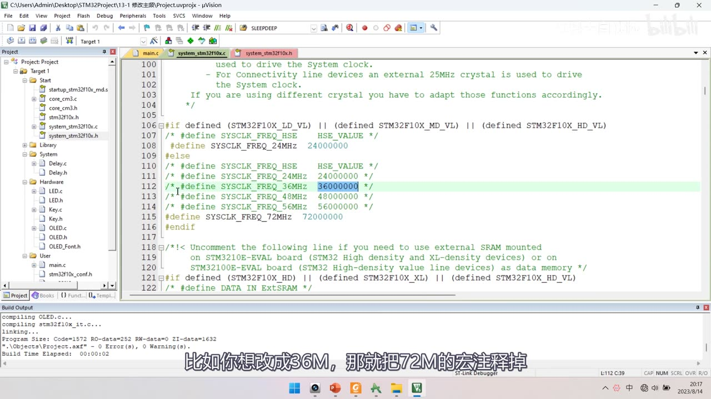
图 4：第 106～116 行的时钟宏区——#if defined (STM32F10X_LD_VL) || (defined STM32F10X_MD_VL) || (defined STM32F10X_HD_VL) 分支（HSE、24MHz）；**#else 分支*：/* #define SYSCLK_FREQ_HSE HSE_VALUE */、/* #define SYSCLK_FREQ_24MHz 24000000 */、/* #define SYSCLK_FREQ_36MHz 36000000 */（高亮，当前生效）、/* #define SYSCLK_FREQ_48MHz 48000000 */、/* #define SYSCLK_FREQ_56MHz 56000000 */、/* #define SYSCLK_FREQ_72MHz 72000000 */（已注释）；字幕「比如你想改成36M，那就把72M的宏注释掉」*
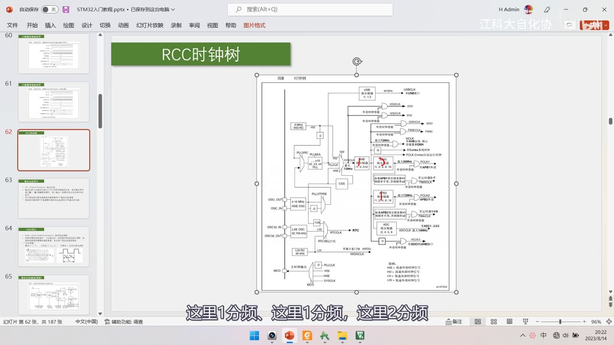
图 5：PPT「RCC时钟树」图8——HSI 8MHz、HSE 4-16MHz → PLLXTPRE/PLLSRC → PLLMUL（×4～×16）→ PLLCLK → SW → SYSCLK 72MHz；AHB 预分频 → HCLK 72MHz；APB2 /1 → PCLK2 72MHz、APB1 /2 → PCLK1 36MHz；LSE 32.768kHz → RTCCLK、LSI 40kHz → IWDGCLK、MCO；红圈标出 HSE 与 APB1 的 36MHz；字幕「这里1分频，这里1分频，这里2分频」
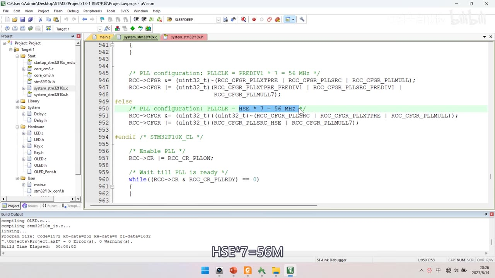
图 6：SetSysClockTo56 的 PLL 配置段——/* PLL configuration: PLLCLK = HSE * 7 = 56 MHz */（高亮）、（先按位取反 RCC_CFGR_PLLSRC | RCC_CFGR_PLLXTPRE | RCC_CFGR_PLLMULL 再与运算）、RCC->CFGR |= (uint32_t)(RCC_CFGR_PLLSRC_HSE | RCC_CFGR_PLLMULL7);、/* Enable PLL */ RCC->CR |= RCC_CR_PLLON;、/* Wait till PLL is ready */ while((RCC->CR & RCC_CR_PLLRDY) == 0) { }；字幕「HSE7=56M」*
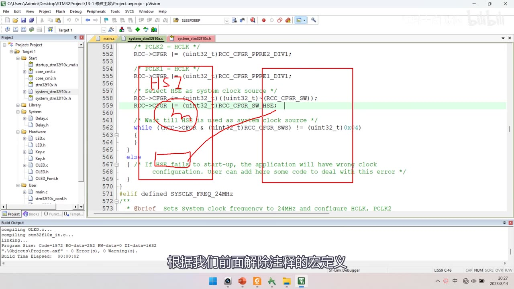
图 7：SetSysClockTo72 的 AHB/APB 与 HSE 切换段——/* PCLK2 = HCLK */ …PPRE2_DIV1;、/* PCLK1 = HCLK */ …PPRE1_DIV1;（红框 + 手写 HSE）、/* Select HSE as system clock source */ … RCC_CFGR_SW_HSE;、while ((RCC->CFGR & RCC_CFGR_SWS) != 0x04) { }、else { /* If HSE fails to start-up, the application will have wrong clock configuration. User can add here some code to deal with this error */ }、#elif defined SYSCLK_FREQ_24MHz；字幕「根据我们前面解除注释的宏定义」
2.6 main 与现象验证
OLED_ShowString(1, 1, "SYSCLK:");
OLED_ShowNum(1, 8, SystemCoreClock, 8); /* 显示当前主频 */
while (1)
{
OLED_ShowString(2, 1, "Running");
Delay_ms(500);
OLED_ShowString(2, 1, " ");
Delay_ms(500);
}
- 72M 时：OLED 显示
SYSCLK:72000000，Running闪烁周期 1s（500ms 亮 + 500ms 灭）； - 改 36M（注掉 72M 宏、放开 36M 宏 → 重新编译下载）：OLED 显示
SYSCLK:36000000，Running周期变 2s——说明主频确实降低了； - 连锁影响：
Delay_us里默认按 72M 写死了常量（Delay_ms也是基于它），所以改主频后所有计时都不准；通用做法是按SystemCoreClock动态计算；作者结论：不推荐随便修改主频（「牵一发而动全身」，要考虑与时钟相关的所有外设/延时）。
3. 程序②：睡眠模式（13-2 睡眠模式+串口发送+接收）
3.1 为什么用睡眠、能不能用其它模式
- 复制
9-2串口收发工程；功能是收到一个字节 → 中断置标志 → 主循环查到后读数据并回发； - 问题：如果一直没收到数据，主循环不断查询标志位——这是无意义的耗电操作；
- 思路：空闲时让 CPU 睡，中断来了再醒来干活；
- 三种模式对「串口随时待命」的适用性：
- 睡眠 ✓：程序不执行，但 USART 硬件电路仍能接收数据，收到后产生中断唤醒 CPU；
- 停止 ✗：1.8V 区域时钟全关，CPU 和外设都不能运行，USART 中断也不能唤醒停止模式（只有 EXTI 能）；
- 待机 ✗：唤醒源固定 4 个，也不适合。
3.2 代码：一句 __WFI()
while (1)
{
if (Serial_GetRxFlag() == 1)
{
RxData = Serial_GetRxData();
Serial_SendByte(RxData);
OLED_ShowHexNum(1, 8, RxData, 2);
}
OLED_ShowString(2, 1, "Running");
Delay_ms(100);
OLED_ShowString(2, 1, " ");
Delay_ms(100);
__WFI(); /* 主循环最后：进入睡眠，等中断唤醒 */
}
- 只需在主循环最后加
__WFI();（也可以__WFE()，区别只是唤醒方式；推荐 WFI 的中断唤醒，本工程只演示 WFI）； __WFI是 CPU 的内核汇编指令（转到定义就到头了，看不到实现）——记得住格式即可；SLEEPDEEP=0是默认值 → 直接就是睡眠模式，不必配寄存器；- 若要配
SLEEPDEEP/SLEEPONEXIT/SEVONPEND，必须直接操作内核的SCB->SCR（Cortex-M3 编程手册 4.4 系统控制块 SCB → SCR）：- Bit 4
SEVONPEND：0＝只有使能的中断或事件能唤醒；1＝**使能的事件和所有中断（含被禁止的中断）**都能唤醒； - Bit 2
SLEEPDEEP：0＝Sleep（睡眠）；1＝Deep sleep（深度睡眠）； - Bit 1
SLEEPONEXIT：0＝中断返回时不睡；1＝中断返回时进入 sleep； - 例如在 WFI 上面写
SCB->SCR |= SCB_SCR_SLEEPDEEP;——本工程保持默认 0 即可。
- Bit 4
3.3 现象
- 串口助手（COM10、9600 8N1）发一个字节，STM32 回传并显示
RxData:66； - 细节：只有收发那一刻
Running才闪一次——空闲时 CPU 一直在睡眠，不影响功能又省电。
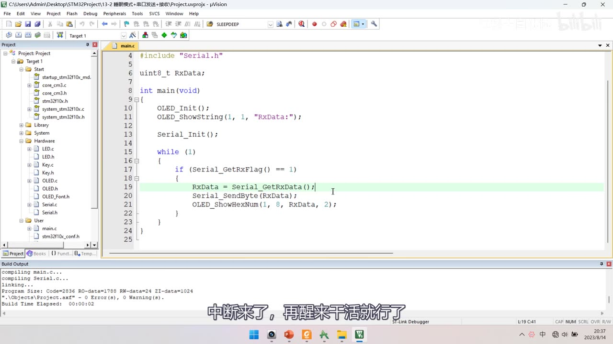
图 8：程序②的 main.c 初版——#include "Serial.h"、uint8_t RxData;、OLED_Init();、OLED_ShowString(1, 1, "RxData:");、Serial_Init();、while (1) { if (Serial_GetRxFlag() == 1) { RxData = Serial_GetRxData(); Serial_SendByte(RxData); OLED_ShowHexNum(1, 8, RxData, 2); } }；字幕「中断来了，再醒来干活就行了」
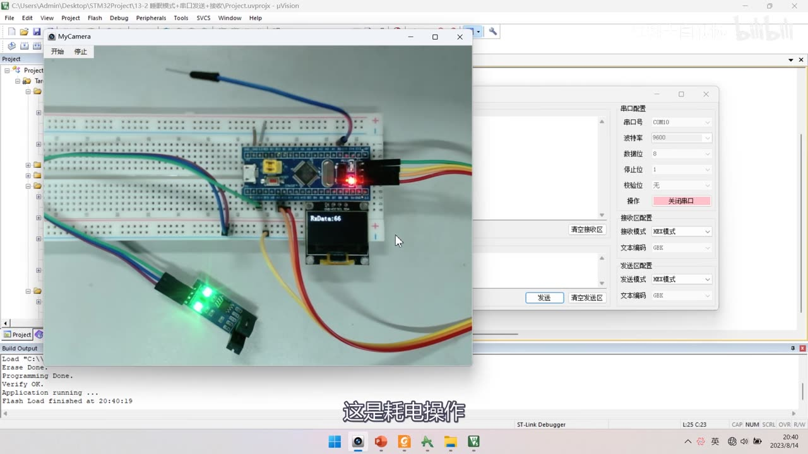
图 9：程序②现象——面包板上 OLED 显示 RxData:66，右侧串口助手（COM10、9600、数据位 8、停止位 1、校验位无）；字幕「这是耗电操作」（指不加睡眠时主循环空转耗电）
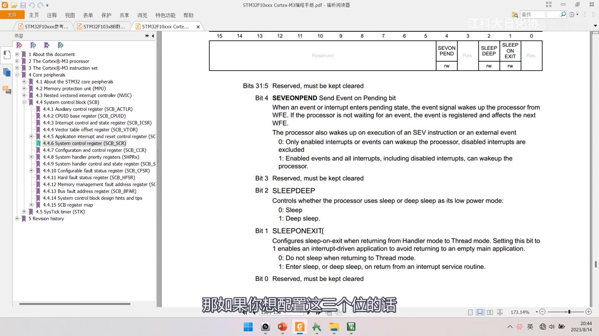
图 10：Cortex-M3 编程手册 SCB_SCR 寄存器——Bit 4 SEVONPEND（0：Only enabled interrupts or events can wakeup the processor, disabled interrupts are excluded；1：Enabled events and all interrupts, including disabled interrupts, can wakeup the processor）、Bit 2 SLEEPDEEP（0：Sleep；1：Deep sleep）、Bit 1 SLEEPONEXIT（0：Do not sleep when returning to Thread mode；1：Enter sleep, or deep sleep, on return from an interrupt service routine）；字幕「那如果你想配置这三个位的话」
4. 程序③：停止模式（13-3 停止模式+对射式红外传感器计次）
4.1 为什么用停止模式
- 复制
5-1工程；原代码CounterSensor_Get()不断轮询，没有中断信号时就是无意义的耗电操作； - 本代码可以用外部中断唤醒，所以适合用更省电的停止模式——停止模式下 1.8V 区域时钟全关，但外部中断的工作不需要时钟（EXTI 是硬件触发），所以仍然能唤醒；
- 表8（红圈）：停机的唤醒列是「任一外部中断」、对 1.8V 区域时钟的影响是「关闭所有 1.8V 区域的时钟」。
4.2 代码：开 PWR 时钟 + PWR_EnterSTOPMode
/* 停止模式和待机模式都需要 PWR 外设 → 必须先开 PWR 时钟 */
RCC_APB1PeriphClockCmd(RCC_APB1Periph_PWR, ENABLE);
...
while (1)
{
/* 显示与计次 */
OLED_ShowString(2, 1, "Running");
Delay_ms(100);
OLED_ShowString(2, 1, " ");
Delay_ms(100);
PWR_EnterSTOPMode(PWR_Regulator_ON, PWR_STOPEntry_WFI); /* 进入停止模式 */
/* 唤醒后必须重配时钟，否则主频是 HSI 的 8MHz */
SystemInit();
}
- ① 先开 PWR 时钟：
RCC_APB1PeriphClockCmd(RCC_APB1Periph_PWR, ENABLE)——千万不要忘，不开则写寄存器无效、读取寄存器全是 0（可以自己试）； - ② 调用
PWR_EnterSTOPMode(PWR_Regulator_ON, PWR_STOPEntry_WFI)：- 参数一：
PWR_Regulator_ON（电压调节器开启）/PWR_Regulator_LowPower（调节器低功耗，更省电、唤醒多一段延时）； - 参数二：
PWR_STOPEntry_WFI/PWR_STOPEntry_WFE；
- 参数一：
- 函数内部（
stm32f10x_pwr.c）：tmpreg = PWR->CR;tmpreg &= CR_DS_MASK;——清除 PDDS 和 LPDS 位（清 PDDS 就是选择停止模式，对应流程图PDDS=0分支）；tmpreg |= PWR_Regulator;——按参数设置 LPDS（调节器开时 LPDS=0）；PWR->CR = tmpreg;SCB->SCR |= SCB_SCR_SLEEPDEEP;——置内核 SLEEPDEEP 位（对应流程图「深度睡眠」分支）；- 根据参数执行
__WFI()或__WFE()。
- 下载方式：低功耗模式下按住复位键 → 点下载 → 松手。
4.3 坑：唤醒后主频变 8M
- 现象：遮挡计次正常，但唤醒后
Running明显变慢； - 原因：PPT 停止模式条目写得很清楚——「当一个中断或唤醒事件导致退出停止模式时，HSI 被选为系统时钟」；首次复位时
SystemInit配的是 HSE×9＝72M，但退出停止模式后 PLL/HSE 没有自动恢复，默认用 HSI 8MHz； - 解决：在
PWR_EnterSTOPMode()后面立刻再调一次SystemInit()，主频恢复到 72M（现象恢复正常）。
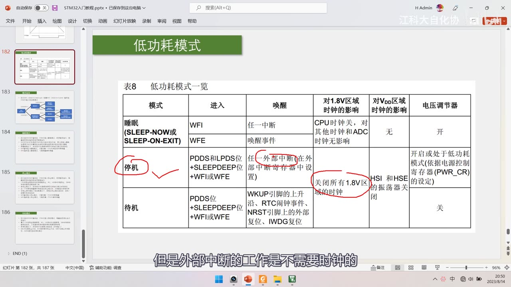
图 11：PPT 表8（红圈标出「停机」行、「任一外部中断」、「关闭所有 1.8V 区域的时钟」）——讲停止模式为什么能被外部中断唤醒；字幕「但是外部中断的工作是不需要时钟的」
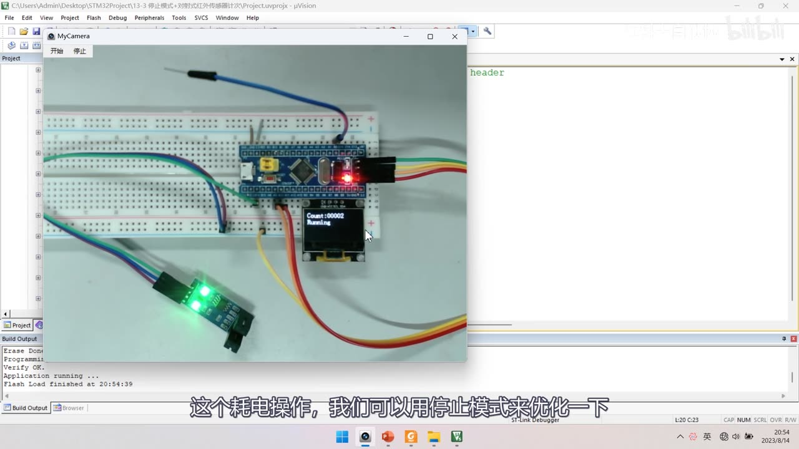
图 12：程序③现象——OLED 显示 Count:00002 与 Running；字幕「这个耗电操作，我们可以用停止模式来优化一下」
![图 13：PWR_EnterSTOPMode 源码（stm32f10x_pwr.c L199 至 L220）——uint32_t tmpreg = 0;、assert_param(IS_PWR_REGULATOR(PWR_Regulator));、assert_param(IS_PWR_STOP_ENTRY(PWR_STOPEntry));、tmpreg = PWR->CR;、/* Clear PDDS and LPDS bits */ tmpreg &= CR_DS_MASK;、/* Set LPDS bit according to PWR_Regulator value */ tmpreg |= PWR_Regulator;（高亮）、/* Store the new value */ PWR->CR = tmpreg;、/* Set SLEEPDEEP bit of Cortex System Control Register */ SCB->SCR |= SCB_SCR_SLEEPDEEP;、/* Select STOP mode entry */ if (PWR_STOPEntry == PWR_STOPEntry_WFI) { __WFI(); }；字幕「那这里LPDS就等于0」](../assets/images/stm32-45/13-enterstopmode-src.jpg)
图 13：PWR_EnterSTOPMode 源码（stm32f10x_pwr.c L199 至 L220）——uint32_t tmpreg = 0;、assert_param(IS_PWR_REGULATOR(PWR_Regulator));、assert_param(IS_PWR_STOP_ENTRY(PWR_STOPEntry));、tmpreg = PWR->CR;、/* Clear PDDS and LPDS bits */ tmpreg &= CR_DS_MASK;、/* Set LPDS bit according to PWR_Regulator value */ tmpreg |= PWR_Regulator;（高亮）、/* Store the new value */ PWR->CR = tmpreg;、/* Set SLEEPDEEP bit of Cortex System Control Register */ SCB->SCR |= SCB_SCR_SLEEPDEEP;、/* Select STOP mode entry */ if (PWR_STOPEntry == PWR_STOPEntry_WFI) { __WFI(); }；字幕「那这里LPDS就等于0」
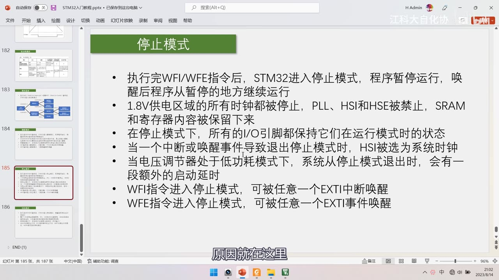
图 14：PPT「停止模式」——7 条要点，其中「当一个中断或唤醒事件导致退出停止模式时，HSI 被选为系统时钟」正是主频变 8M 的原因；字幕「原因就在这里」
5. 程序④：待机模式（13-4 待机模式+实时时钟）
5.1 用 RTC 闹钟唤醒
- 复制
12-2 实时时钟工程；先把显示改成CNT:/ALR:/ALRF:，去掉年月日时分秒和 DIV 的显示； - 设定闹钟（约 10s 后唤醒）：
uint32_t Alarm = RTC_GetCounter() + 10; /* 当前秒数 + 10s */
RTC_SetAlarm(Alarm);
OLED_ShowNum(2, 6, Alarm, 10); /* 显示闹钟值：必须用变量，不能读寄存器 */
- 坑：
RTC_ALR寄存器是只写的！查手册 RTC 寄存器描述可以发现RTC_ALR各位的读写特征里只有W（写）、没有R（读）——读不回来； - 所以必须用变量
Alarm保存闹钟值再显示（手册里还有读写缩写对照表可以查：W＝只写、R＝只读、rw＝读写等）； - 现象验证：主循环显示
CNT不断自增、ALR是复位后 10s；等CNT增长到与ALR相等，在CNT = ALR的最后时刻ALRF置 1——闹钟功能正常。
5.2 进入待机
/* PWR 时钟：本工程前面已有，但为了独立可用，这里再开一次也无妨 */
RCC_APB1PeriphClockCmd(RCC_APB1Periph_PWR, ENABLE);
while (1)
{
OLED_ShowNum(1, 6, RTC_GetCounter(), 10);
OLED_ShowNum(3, 6, RTC_GetFlagStatus(RTC_FLAG_ALR), 1);
OLED_ShowString(4, 1, "Running");
Delay_ms(100);
OLED_ShowString(4, 1, " ");
Delay_ms(100);
OLED_ShowString(4, 9, "STANDBY");
Delay_ms(1000); /* 测电流时改 10000 */
OLED_ShowString(4, 9, " ");
Delay_ms(100);
OLED_Clear(); /* 模拟关闭外部模块 */
PWR_EnterSTANDBYMode(); /* 进入待机模式 */
}
- 说明：虽然
12-2工程里已经开过 PWR 时钟，但本程序独立使用待机模式，所以再开一次 PWR 时钟（重复开启不会有问题）——这样能降低对 RTC 代码的依赖； PWR_EnterSTANDBYMode()内部：- 清除 WakeUp 标志（
PWR_CSR的 WUF）； - 选择 STANDBY 模式——实际上就是
PDDS=1； - 设置内核
SLEEPDEEP位； - 执行
__WFI()；
- 清除 WakeUp 标志（
- 待机不区分 WFI/WFE：它的唤醒条件是固定的那 4 个信号（WKUP 上升沿 / RTC 闹钟 / NRST / IWDG），没有区分中断唤醒和事件唤醒，所以函数里固定用 WFI；
- 现象：复位后
Running闪烁、随后CNT不再刷新（已进入待机）→ RTC 闹钟触发唤醒 →CNT与 ALR 重新刷新、Running再闪——说明唤醒后程序是从头开始执行的（如果从中断暂停点继续执行，闹钟值就不会更新）； - 因为待机退出＝程序从头跑，所以
PWR_EnterSTANDBYMode()之后的代码永远执行不到（while (1)其实也可以去掉）。
5.3 WKUP 引脚唤醒与「必须关外部模块」
PWR_WakeUpPinCmd(ENABLE); /* 使能 WKUP 引脚（PA0），放在 main 靠前位置 */
PWR_WakeUpPinCmd(ENABLE)使能位于 PA0 的 WKUP 引脚；- 这个引脚默认是下拉的，接高电平即可唤醒，不需要做 GPIO 初始化（手册：使能 WKUP 引脚后由 PWR 直接控制）——所以这句放在 main 里靠前位置即可；
- 现象：给 WKUP 接高电平（或接其他传感器信号）就能唤醒 STM32；
- 进待机前必须关掉外部模块：作者用
OLED_Clear()模拟——真实产品里要切断外挂模块的电源，因为外挂模块的耗电远超 STM32 本身（「捡了芝麻丢了西瓜」）；这需要精心设计硬件电路。
5.4 实测电流
- 手册说待机模式电流约 3µA，作者单独找了块板子、用万用表测电流验证：
- 直接测：1mA 多——远超手册，电源指示灯肯定耗电；
- 去掉电源指示灯再测：仍有几百 µA——还有别的东西耗电；
- 继续排查处理：降到 3µA，与手册数据基本一致；
- 正常工作电流：20 多 mA；
- 为了便于测电流，作者把
STANDBY显示时间延长到 10s、待机闹钟改成 100s（uint32_t Alarm = RTC_GetCounter() + 100;），这样待机时间足够测量。
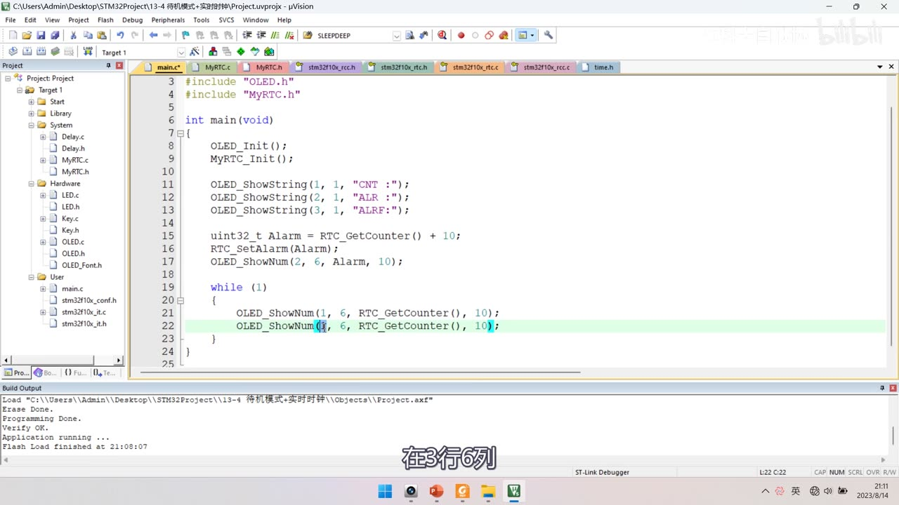
图 15：程序④ main.c——OLED_ShowString(1, 1, "CNT :")/(2, 1, "ALR :")/(3, 1, "ALRF:");、uint32_t Alarm = RTC_GetCounter() + 10;、RTC_SetAlarm(Alarm);、OLED_ShowNum(2, 6, Alarm, 10);、while (1) { OLED_ShowNum(1, 6, RTC_GetCounter(), 10); OLED_ShowNum(3, 6, RTC_GetCounter(), 10); }（第 3 行正在改为 ALR 标志）；字幕「在3行6列」
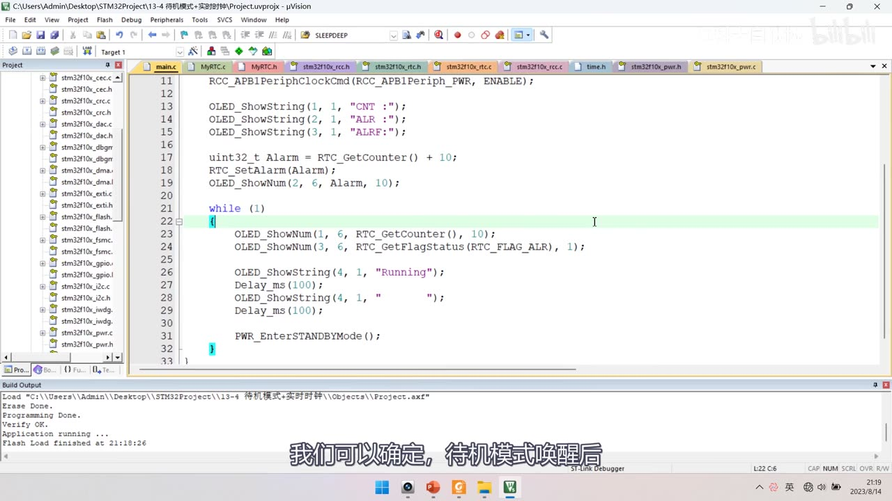
*图 16：程序④ main.c——RCC_APB1PeriphClockCmd(RCC_APB1Periph_PWR, ENABLE);、显示 CNT/ALR/ALRF、uint32_t Alarm = RTC_GetCounter() + 10;、RTC_SetAlarm(Alarm);、OLED_ShowNum(2, 6, Alarm, 10);、while 里读 CNT 与 RTC_GetFlagStatus(RTC_FLAG_ALR)、Running 闪烁，末尾 PWR_EnterSTANDBYMode();；字幕「我们可以确定，待机模式唤醒后」*
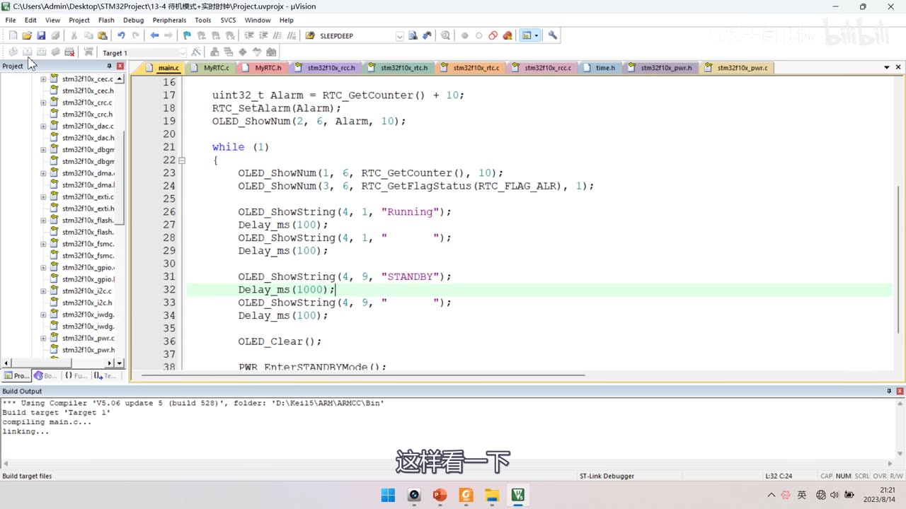
图 17：程序④ 进待机前的动作——OLED_ShowString(4, 9, "STANDBY"); Delay_ms(1000); OLED_ShowString(4, 9, " "); Delay_ms(100); OLED_Clear(); PWR_EnterSTANDBYMode();；字幕「这样看一下」
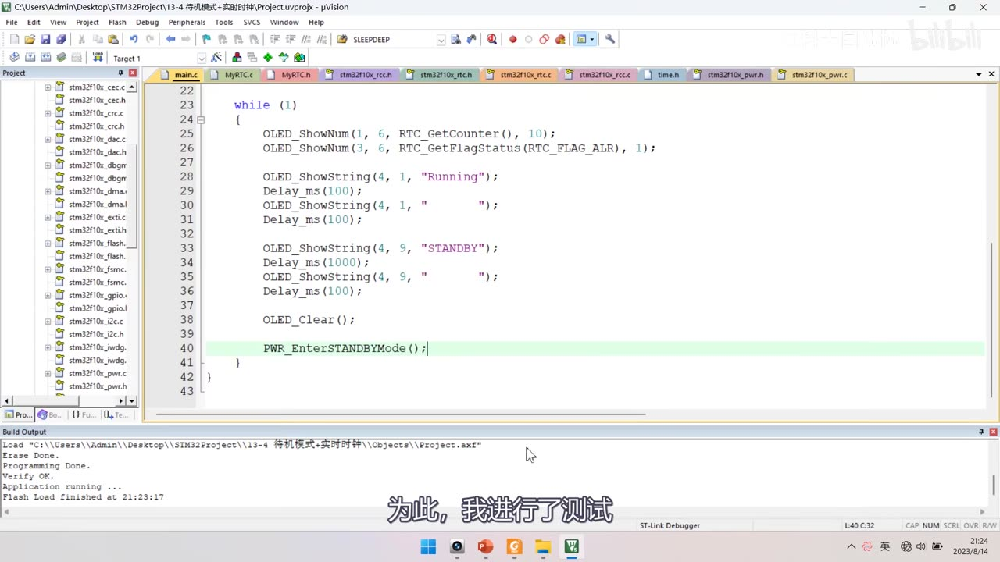
图 18：程序④ 主循环末尾——OLED_ShowString(4, 9, "STANDBY"); Delay_ms(1000); … OLED_Clear(); PWR_EnterSTANDBYMode();（进待机前先清屏，模拟关闭外部模块）；字幕「为此，我进行了测试」
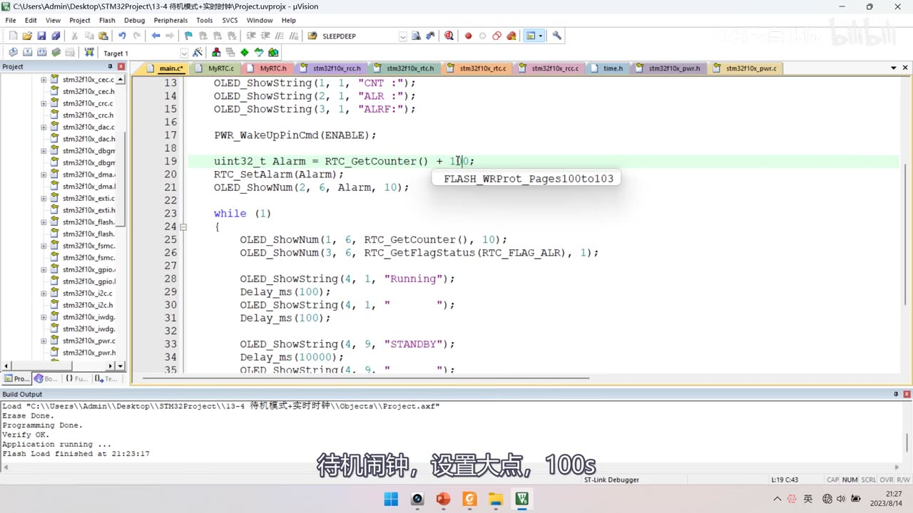
*图 19：测电流改造版——多了 PWR_WakeUpPinCmd(ENABLE);（第 17 行）、uint32_t Alarm = RTC_GetCounter() + 100;（高亮，闹钟改 100s 便于测量）、OLED_ShowString(4, 9, "STANDBY"); Delay_ms(10000);；字幕「待机闹钟，设置大点，100s」*
坑与易错点
- 4 个程序的复制来源别混：
13-1←OLED、13-2←9-2串口、13-3←5-1、13-4←12-2实时时钟。 SYSCLK_FREQ_*宏在第 106～116 行的#else组（F103C8T6 是 MD），共 6 档；改法＝注掉当前、放开目标。system_stm32f10x.c默认只读：要先在文件夹里取消只读属性才能改。- PLL 倍频关系：72M＝HSE×9、56M＝HSE×7、48M＝HSE×6、36M＝HSE/2×9、24M＝HSE/2×6；AHB /1、APB2 /1、APB1 /2。
- HSE 起振失败走
else：主频仍是 HSI 8M——「发现主频 8M」就是 HSE 有问题。 - 改主频连带所有计时：
Delay_us写死 72M，改主频后不准；改完要调SystemCoreClockUpdate()；作者不推荐随便改主频。 - 睡眠只需
__WFI()：SLEEPDEEP=0默认就是睡眠；配置SCB->SCR属内核，不是 PWR 库。 __WFI/__WFE是 CMSIS 内核指令，不是库函数；推荐用 WFI 的中断唤醒。- 停止模式两坑：① PWR 时钟必须开（否则写寄存器无效、读回全 0）；② 唤醒后 HSI 8M 成系统时钟 → 必须立刻
SystemInit()。 PWR_EnterSTOPMode参数：PWR_Regulator_ON/_LowPower（LPDS=0/1）与PWR_STOPEntry_WFI/_WFE。RTC_ALR只写：读不回来，必须用变量保存闹钟值再显示。- 待机不区分 WFI/WFE：唤醒源固定 4 个（WKUP(PA0)/RTC 闹钟/NRST/IWDG）。
- 待机唤醒后程序从头跑：
PWR_EnterSTANDBYMode()之后的代码永远执行不到。 PWR_WakeUpPinCmd(ENABLE)不用 GPIO 初始化：WKUP(PA0) 默认下拉、接高唤醒。- 进待机前必须关外部模块：外挂模块耗电远超 STM32 本身（示例只
OLED_Clear模拟）。 - 实测待机 3µA 与手册吻合；正常 20 多 mA——测之前先把电源指示灯等耗电件处理掉。
- 低功耗模式下下载：按住复位 → 点下载 → 松手。
时间轴
| 时间 | 内容 |
|---|---|
| 0:01 | 大家好，欢迎回来 |
| 0:02 | 本小节学习低功耗模式的代码部分 |
| 0:05 | 先看一下接线图 |
| 0:08 | 本节代码都在之前代码基础上修改 |
| 0:11 | 接线基本和对应代码一样 |
| 0:15 | 13-1 修改主频 |
| 0:30 | 13-2 睡眠模式+串口发送+接收 |
| 0:33 | 13-3 停止模式+红外传感器计次 |
| 0:36 | 13-4 待机模式+实时时钟 |
| 2:04 | 这就是这几个代码的接线 |
| 2:07 | 面包板接线都已事先接好 |
| 2:14 | 回到工程文件夹 |
| 2:20 | 第一个代码：复制 OLED 显示屏工程 |
| 2:23 | 改名 13-1 修改主频，编译 |
| 2:40 | 在这个工程里看代码怎么运作 |
| 3:00 | 利用它提供的宏完成修改主频 |
| 3:02 | 用它来降低功耗 |
| 3:38 | RCC 时钟树：提供 SYSCLK、APB1、APB2 时钟 |
| 4:02 | 外部 8MHz 晶振如何倍频得到 72MHz |
| 4:15 | 之前课程一直保持默认配置 |
| 4:27 | 但这些都不是绝对的 |
| 4:37 | 随意更改可能造成问题 |
| 4:42 | 回到程序看它怎么配置时钟树 |
| 4:46 | 文件最开始写了注释 |
| 4:55 | 注释还是要好好看 |
| 5:09 | system 两个文件提供三个东西 |
| 5:21 | 变量是 SystemCoreClock |
| 5:34 | 头文件总共就这么多东西 |
| 5:39 | 三个东西的用途右边有解释 |
| 5:46 | 这是整个文件最主要的东西 |
| 6:00 | 时钟就配置好了 |
| 6:07 | SystemCoreClock 表示主频频率值 |
| 6:13 | SystemCoreClockUpdate 更新这个变量 |
| 6:19 | 因为这个变量只在最开始赋值 |
| 6:42 | 更改主频的宏定义 |
| 6:53 | 配置的地方 |
| 7:01 | 主频只能从 HSE 8M 倍频得到 |
| 7:22 | 预编译的含义：define 了就下面不生效 |
| 7:42 | F103C8T6 是 MD，看 else 这组 |
| 7:49 | 在这里可以修改主频频率 |
| 8:02 | 文件列表里带锁说明是只读 |
| 8:14 | 解除只读：打开包含的文件夹 |
| 8:24 | 右键属性，去掉只读勾选 |
| 8:32 | 也可以对整个文件夹操作 |
| 8:37 | 回到 Keil 就可以改代码 |
| 8:59 | 简单看它里面的代码 |
| 9:03 | 看不懂没关系，注释都写着 |
| 9:28 | 转到 SetSysClock 函数 |
| 9:39 | 根据宏定义不同执行不同分支 |
| 10:04 | 转到 72M 这个函数 |
| 10:14 | 等待 HSERDY 或超时退出 |
| 10:35 | PCLK2 和 PCLK1 的分频器 |
| 10:45 | 分频分别是 1、1、2 |
| 10:58 | SYSCLK 是 72M 时，AHB/APB2 72M、APB1 36M |
| 11:11 | 我们是 MD，所以 #if 里面不看 |
| 11:16 | 这里配置锁相环 9 倍频 |
| 11:23 | 锁相环输出 72M |
| 11:26 | 之后使能锁相环 |
| 11:46 | 对应时钟树，选择 PLL 为 SYSCLK |
| 11:50 | 这就是库函数默认的时钟配置 |
| 11:56 | 代码最后还有个 else |
| 11:58 | 如果 HSE 启动失败 |
| 12:11 | 那么上面的代码都不执行 |
| 12:13 | 程序默认使用 HSI 8M 作主频 |
| 12:19 | 如果主频变成 8M，可以在这里加错误处理 |
| 12:37 | 除了 SetTo72 还有 SetTo56 |
| 12:51 | 锁相环倍频是 7 倍，HSE×7＝56M |
| 12:57 | HSE×6＝48M |
| 13:03 | (HSE/2)×9＝36M |
| 13:19 | (HSE/2)×6＝24M |
| 13:38 | 还有不分频的 HSE 直通 |
| 13:40 | 画个图总结 SystemInit 流程 |
| 13:42 | 进来先启动 HSI |
| 13:48 | 最后调用 SetSysClock |
| 14:16 | 锁相环 9 倍频，主频就是 72M |
| 14:26 | 有个变量可以表示当前主频 |
| 14:42 | 用 OLED 显示出来 |
| 15:03 | 测试一下 |
| 15:16 | 主循环里加 Delay 看运行速度 |
| 15:25 | 2 行 1 列显示 Running |
| 15:30 | Delay 给 500 |
| 15:41 | 闪烁周期是 1s |
| 15:43 | 下载看现象 |
| 15:51 | Running 闪烁周期是 1s |
| 15:55 | 如何修改主频 |
| 15:56 | 到 system.c 文件最开始 |
| 16:00 | 改成 36M |
| 16:11 | 下载看 |
| 16:17 | 显示的主频是 36M |
| 16:21 | 目前闪烁周期是 2s |
| 16:25 | 说明主频确实降低了 |
| 16:35 | 修改主频后涉及计时的都要重新匹配 |
| 16:40 | 代码里默认使用 72M 主频 |
| 16:46 | Delay_us 默认是 72 |
| 16:50 | Delay 时间才正确 |
| 16:56 | 想在任何主频下 Delay 都正确 |
| 17:00 | 程序就别写死 |
| 17:11 | 从这里可以看出这是牵一发而动全身的事 |
| 17:17 | 都要做好匹配工作 |
| 17:20 | 所以不推荐随便修改主频 |
| 17:41 | 接下来学习第二个代码 |
| 17:42 | 回工程文件夹复制 9-2 工程 |
| 17:50 | 改名 13-2 睡眠模式+串口收发 |
| 18:02 | 编译一下 |
| 18:08 | 为它加入低功耗代码 |
| 18:26 | 为了随时响应指令，STM32 要时刻准备着 |
| 18:36 | 主循环一直在查询，比较费电 |
| 18:52 | 对于中断触发的程序，没事就低功耗 |
| 19:04 | 看 PPT：睡眠模式可行 |
| 19:11 | 程序不再执行，但 USART 还能收数据 |
| 19:14 | 收到数据产生中断唤醒 CPU |
| 19:29 | 停机模式 |
| 19:37 | 停止模式下 1.8V 时钟全关 |
| 19:47 | USART 中断也不能唤醒停止模式 |
| 19:51 | 所以这个功能用不了停止模式 |
| 19:54 | 待机模式也不适合 |
| 20:06 | 开始写代码：先看不加睡眠的情况 |
| 20:09 | 显示 Running 加延时 |
| 20:30 | 正常情况先下载看 |
| 20:38 | 主循环在一直运行 |
| 20:46 | 数据收发没问题 |
| 20:49 | 没有数据发送时主循环还在运行 |
| 20:57 | 怎么用睡眠模式呢 |
| 21:02 | 主循环最后加一个 WFI 指令 |
| 21:11 | 这就是 WFI 指令，格式照这个来 |
| 21:14 | 另一个指令是 WFE |
| 21:17 | 两者区别是唤醒方式不同 |
| 21:23 | 推荐使用 WFI 中断唤醒 |
| 21:34 | 所以工程只演示 WFI |
| 21:38 | 转到定义是 CPU 汇编指令 |
| 21:53 | 睡眠模式还涉及两个寄存器位 |
| 21:55 | 一个是 SLEEPDEEP |
| 22:06 | 所以暂时不配置，直接用默认值 0 |
| 22:08 | 进入的就是默认的睡眠模式 |
| 22:13 | 要配置得用操作寄存器的方式 |
| 22:15 | 位于内核的系统控制块 |
| 22:20 | 打开 Cortex-M3 编程手册 |
| 22:26 | 第 4 章 4.4 系统控制块 SCB |
| 22:29 | 这里有系统控制寄存器 SCR |
| 22:36 | 这里有三个和低功耗相关的位 |
| 22:39 | SEVONPEND：事件唤醒需要设置的位 |
| 22:42 | SLEEPDEEP：决定是否进入深度睡眠 |
| 22:47 | SLEEPONEXIT：立刻睡还是中断结束再睡 |
| 22:55 | 要配置就用操作寄存器方式 |
| 23:01 | 在 WFI 上面写 SCR 寄存器 |
| 23:16 | 这些位暂时不配，保持默认 0 |
| 23:22 | 编译下载看 |
| 23:26 | 第二行 Running |
| 23:32 | CPU 正在睡眠 |
| 23:39 | 每发送一次数据 Running 闪烁 |
| 23:45 | 可以唤醒工作 |
| 23:47 | 不影响程序功能的前提下空闲时睡眠 |
| 23:54 | 回到程序看流程 |
| 24:00 | 串口配置好进入主循环 |
| 24:06 | 主循环最后 WFI，CPU 立刻睡眠 |
| 24:10 | 程序停在 WFI 指令这里 |
| 24:24 | 产生中断 |
| 24:30 | 程序运行到 WFI 之后 |
| 24:33 | 中断也会立刻申请 |
| 24:39 | 先进入 USART 中断函数 |
| 24:49 | 回到主循环开头 |
| 24:53 | RxFlag 刚置 1，所以 if 成立 |
| 25:01 | Running 闪烁 |
| 25:03 | 程序又来到 WFI，再次睡眠 |
| 25:16 | 数据发过来时唤醒，恰到好处 |
| 25:36 | 这就是睡眠模式的代码 |
| 25:44 | 继续看下一个：停止模式 |
| 25:47 | 停止模式只能通过外部中断唤醒 |
| 25:54 | 复制 5-1 的代码 |
| 25:58 | 改名 13-3 停止模式+对射式红外传感器计次 |
| 26:06 | 打开工程 |
| 26:16 | 对于这个代码，睡眠模式是可行的 |
| 26:24 | 没有中断信号时 Get 是无意义的耗电 |
| 26:30 | 这个 while 循环也没有必要 |
| 26:36 | 空闲时可以进入低功耗 |
| 26:39 | 因为可以用外部中断唤醒 |
| 26:42 | 所以可以用更省电的停止模式 |
| 26:46 | 停止模式下 1.8V 时钟关闭 |
| 26:54 | 从代码里也可以看出来 |
| 27:07 | 确定好用停止模式后开始写代码 |
| 27:35 | 打开 pwr.h |
| 27:46 | DeInit 恢复缺省配置 |
| 27:49 | BackupAccessCmd |
| 27:59 | 两个和 PVD 相关的函数 |
| 28:14 | WakeUpPinCmd 使能 WKUP 引脚 |
| 28:21 | 配合待机模式使用 |
| 28:35 | EnterSTOPMode 等会要用 |
| 28:44 | EnterSTANDBYMode |
| 28:58 | 库函数就清楚了 |
| 29:07 | 在主循环下面加代码 |
| 29:24 | 这些代码不是必须的，方便观察 |
| 29:32 | 看当前代码现象 |
| 29:36 | 下载步骤注意 |
| 29:44 | 遮挡传感器数值会变化 |
| 29:50 | 没有中断时它还在不断 Running |
| 29:52 | 这个耗电操作用停止模式优化 |
| 29:57 | 回到程序加入停止模式代码 |
| 30:01 | 停止和待机都需要 PWR 外设 |
| 30:04 | 所以首先开启 PWR 时钟 |
| 30:22 | 千万不要忘开 |
| 30:26 | 否则写寄存器无效 |
| 30:28 | 读取寄存器也全都是 0 |
| 30:32 | 时钟开启之后直接调用函数 |
| 30:40 | PWR_EnterSTOPMode |
| 31:20 | 转到定义看它干了什么 |
| 31:23 | 第一步读取 PWR_CR 到临时变量 |
| 31:28 | 第二步清除 PDDS 和 LPDS |
| 31:32 | 清 PDDS 就是选择停止模式 |
| 31:46 | 第三步按参数设置 LPDS |
| 31:52 | 选调节器开时 LPDS 就等于 0 |
| 31:56 | 选低功耗时 LPDS 就等于 1 |
| 32:08 | 把临时变量写回 PWR_CR |
| 32:13 | 最后设置内核 SLEEPDEEP 位 |
| 32:25 | PDDS 和 LPDS 都已配置好 |
| 32:43 | 程序最后根据参数执行 WFI 或 WFE |
| 32:47 | 执行到这里芯片进入停止模式 |
| 32:56 | 退出停止模式后 |
| 33:16 | 现在测试：按住复位键下载 |
| 33:27 | 遮挡试一下 |
| 33:32 | 每遮挡一次 Running 闪烁 |
| 33:36 | 不过我们还注意到 |
| 33:44 | 这是正常的时间吗 |
| 33:49 | 这是什么原因呢 |
| 33:50 | PPT 这里提到过 |
| 33:54 | 原因就在这里：HSI 被选为系统时钟 |
| 34:00 | 首次复位后 SystemInit 配置 72M |
| 34:13 | 退出停止模式后 HSI 是 8M |
| 34:17 | 这就是刚才现象的原因 |
| 34:20 | 找到原因了 |
| 34:25 | 重新调用 SystemInit |
| 34:31 | 放在这里 |
| 34:42 | 低功耗模式不能直接下载 |
| 34:58 | 这样解决了主频变 8M 的问题 |
| 35:04 | 睡眠模式是非常类似的 |
| 35:07 | 复位后初始化进入主循环 |
| 35:18 | 执行 WFI 后程序立刻暂停 |
| 35:23 | 外部中断发生时先进入中断函数 |
| 35:28 | 中断函数退出后 |
| 35:35 | while 循环回到开头 |
| 35:45 | 第三个程序就写完了 |
| 35:47 | 最后看第四个程序 |
| 35:49 | 回工程文件夹 |
| 35:51 | 复制 12-2 实时时钟程序 |
| 35:55 | 改名 13-4 待机模式+实时时钟 |
| 36:06 | 先编译 |
| 36:12 | 在这个工程里设置 RTC 闹钟 |
| 36:19 | 代码之前先改显示 |
| 36:37 | 秒计数器、闹钟值、ALRF |
| 36:44 | 年月日时分秒不显示了 |
| 36:52 | DIV 也不要了 |
| 36:54 | 现在看一下 |
| 36:57 | 下载松手 |
| 36:59 | 按复位键 |
| 37:07 | 任务：设定闹钟 |
| 37:16 | 闹钟值不用特别记 |
| 37:29 | 怎么设定闹钟呢，调用 SetAlarm |
| 37:32 | 放到这里 |
| 37:44 | 就是设定闹钟为 10s 后 |
| 37:53 | 但是这里有个问题 |
| 37:55 | 就是闹钟寄存器 |
| 37:59 | 怎么看出寄存器是只写还是只读呢 |
| 38:05 | 打开 RTC 寄存器描述 |
| 38:10 | 可以看到寄存器下面有读写特征 |
| 38:34 | 这里写的是 W，就代表只能写不能读 |
| 38:51 | 所以这个闹钟寄存器是只写的 |
| 39:05 | 定义一个变量保存闹钟值 |
| 39:16 | 就直接显示这个变量 |
| 39:34 | CNT 会和 ALR 相等 |
| 39:46 | 看一下闹钟标志位 |
| 39:50 | 在主循环里不断刷新显示 |
| 39:54 | 在 3 行 6 列 |
| 40:12 | 主循环后面加 Running 指示 |
| 40:31 | 现在看一下现象 |
| 40:38 | 第一行 CNT 不断自增 |
| 40:40 | 第二行 ALR 是复位后 10s |
| 40:45 | 然后等 CNT＝ALR |
| 40:50 | 它是 CNT＝ALR 的最后时刻 ALRF 才置 1 |
| 40:54 | 闹钟测试没问题 |
| 40:57 | 回到代码 |
| 41:03 | 进入待机模式要用 PWR 外设 |
| 41:05 | 使用前别忘了开启时钟 |
| 41:12 | 这个代码里已经开过 PWR 时钟 |
| 41:14 | 但我们使用待机模式的话 |
| 41:27 | 再开一遍不会有任何问题 |
| 41:42 | 增大代码之间的耦合性 |
| 41:45 | 没有 RTC 待机模式就不能工作 |
| 41:54 | 之后改程序可能会引起隐蔽的 bug |
| 42:02 | 进入待机模式 |
| 42:05 | 在主循环最后调用函数 |
| 42:22 | 转到定义看它干了什么 |
| 42:24 | 第一步清除 WakeUp 标志位 |
| 42:27 | 第二步选择 STANDBY 模式 |
| 42:30 | 实际上就是把 PDDS 置 1 |
| 42:32 | PDDS 为 1 表示进入待机模式 |
| 42:46 | 待机模式不区分 WFI 和 WFE |
| 43:12 | 不用区分，调用 WFI 进入待机 |
| 43:13 | 这 4 个信号都能唤醒 |
| 43:17 | 函数内部功能就清楚了 |
| 43:20 | 接下来进行测试 |
| 43:29 | 复位后 Running 闪烁 |
| 43:32 | 这时 CNT 也不会刷新了 |
| 43:40 | 闹钟触发，待机模式唤醒 |
| 43:42 | CNT 和闹钟值刷新，Running 闪烁 |
| 43:46 | 这就是目前程序的现象 |
| 43:55 | 可以看出程序是从头开始执行的 |
| 44:00 | 如果程序不是从头开始，闹钟值不会更新 |
| 44:06 | 高速时钟也都会关闭 |
| 44:12 | 在程序刚开始的时候 |
| 44:28 | 待机模式退出，程序从头开始 |
| 44:36 | 待机模式之后的代码执行不到 |
| 44:38 | 这个 while 循环实际上也只执行一次 |
| 44:44 | 待机模式目标是极度省电 |
| 44:48 | 光 STM32 自己省电还不行 |
| 44:51 | 进待机前一般要关掉外部模块 |
| 45:03 | 外挂模块耗电远超 STM32 本身 |
| 45:10 | 那就捡了芝麻丢了西瓜 |
| 45:15 | 所以进待机前一定关外部模块 |
| 45:20 | 这样才能最大化省电 |
| 45:22 | 这个功能需要精心设计硬件电路 |
| 45:32 | 程序这里就简单模拟 |
| 45:36 | 来个 OLED_Clear 清屏 |
| 45:46 | 放在 4 行 9 列显示 STANDBY |
| 45:49 | 显示停留时间长一点 |
| 46:00 | 下载松手，复位一下 |
| 46:05 | 最开始显示，OLED 清屏 |
| 46:13 | 闹钟触发之后 |
| 46:24 | 看一下库函数 |
| 46:25 | 调用 WakeUpPinCmd |
| 46:31 | 参数给 ENABLE |
| 46:33 | 就这一条代码 |
| 46:36 | 你可能会问用到了 GPIO 引脚 |
| 46:38 | 需不需要 GPIO 初始化 |
| 46:53 | 不用再 GPIO 初始化了 |
| 47:02 | 下载松手 |
| 47:06 | WKUP 引脚默认是下拉的 |
| 47:16 | WKUP 接高电平的时刻唤醒 |
| 47:26 | 或者别的传感器信号唤醒 STM32 |
| 47:34 | 本节的代码 |
| 47:39 | 最后的最后验证电流 |
| 47:47 | 手册说待机电流约 3µA |
| 47:53 | 我进行了测试 |
| 48:02 | 单独找了块板子用万用表测电流 |
| 48:06 | 最开始直接测高达 1 点多 mA |
| 48:09 | 远超手册说的 3µA |
| 48:11 | 电源指示灯肯定是耗电的 |
| 48:18 | 再测电流仍有几百 µA |
| 48:21 | 说明还有别的东西耗电 |
| 48:35 | 待机电流就下降到 3µA 了 |
| 48:38 | 接下来给大家演示 |
| 48:44 | 为了方便测试把时间延长 |
| 48:49 | STANDBY 显示时间给 10s |
| 48:51 | 待机闹钟设成 100s |
| 48:56 | 先把板子下载 |
| 49:26 | 最开始是正常工作的电流 |
| 49:34 | 正常工作就是 20 多 mA |
| 49:50 | 目前待机供电电流单位是 µA |
| 49:55 | 和手册数据基本一致 |
| 50:05 | 从实验可以看出用待机模式省电 |
| 50:18 | 好，那到这里 |
存疑
- 本集文本来自画面硬字幕的 OCR（PP-OCRv4，source=subtitle-ocr，699 段），不是 ASR。错字主要是
停止→ 「停北」（7 处）、运行→ 「云行」（3 处）、模式→ 「模贰」（3 处）、编译→ 「扁译」（2 处）、数据→ 「数居」（2 处）、晶振→ 「显振」；并混入网页/PDF 文字与工具栏文字——已按画面/上下文校正。 - 4 个程序的复制来源请不要写混：
13-1←OLED 显示屏、13-2←9-2串口收发、13-3←5-1、13-4←12-2实时时钟。 SYSCLK_FREQ_*在第 106～116 行（#else分支，F103C8T6 属 MD）：HSE / 24M / 36M / 48M / 56M / 72M 共 6 档；文件默认只读，须先取消只读属性（作者是在文件夹里改属性）。- PLL 倍频算式按
SetSysClockToXX源码写：72M＝HSE×9、56M＝HSE×7、48M＝HSE×6、36M＝HSE/2×9、24M＝HSE/2×6、HSE 档直通；AHB /1、APB2 /1、APB1 /2。 - 改主频的连锁影响：
Delay_us按 72M 写死常量，改主频后计时不准，通用做法按SystemCoreClock动态计算；改完要调SystemCoreClockUpdate()；作者结论「不推荐随便修改主频」。 - 睡眠模式只需
__WFI()，SLEEPDEEP=0（默认）即睡眠；配置SLEEPDEEP/SLEEPONEXIT/SEVONPEND需直接操作SCB->SCR（内核，非 PWR 库；见 Cortex-M3 手册 4.4）。 - 停止模式两坑：① PWR 时钟必须开（否则写寄存器无效、读回全 0）；② 唤醒后 HSI(8MHz) 成为系统时钟 → 必须立刻
SystemInit()（现象是 Running 变慢）。 PWR_EnterSTOPMode两参数：PWR_Regulator_ON/_LowPower（LPDS=0/1）、PWR_STOPEntry_WFI/_WFE；内部流程为「读 CR → 清CR_DS_MASK(PDDS/LPDS) → 按参数设 LPDS → 写回 → 置SCB_SCR_SLEEPDEEP→ WFI/WFE」。RTC_ALR是只写寄存器：手册位说明里只标W，读不回来，必须用变量Alarm保存再显示。- 待机模式：不区分 WFI/WFE（唤醒源固定 4 个）、唤醒后程序从头跑、
PWR_WakeUpPinCmd(ENABLE)无需 GPIO 初始化、进待机前必须关外部模块。 - 实测电流：未处理 1mA 多（电源指示灯）→ 去掉后 几百 µA → 最终 3µA（与手册一致）；正常工作 20 多 mA。为测电流把
STANDBY显示延长到 10s、闹钟改 100s。 - 无下集预告：结尾是待机电流实测收束。
- 待机电流「约 3µA」的口径：作者原话是「手册说大概 3µA」，但 P42 讲过的表16 典型值是 1.7～2µA 级（不同温度/电压下最大 4～5µA）——3µA 是四舍五入的说法，实测 3µA 落在典型值与最大值之间，跨集阅读别当成矛盾。